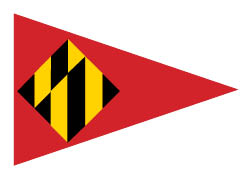
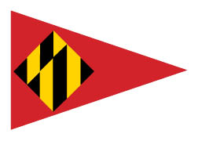


 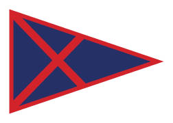
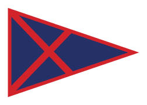

 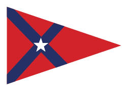
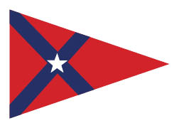
 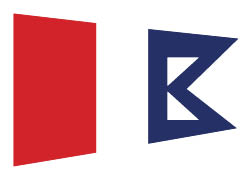
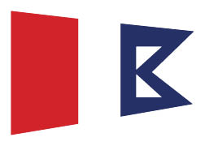

 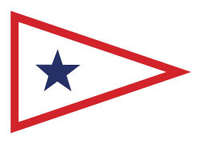
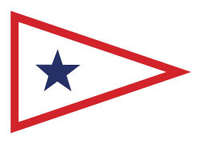
 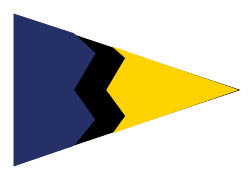
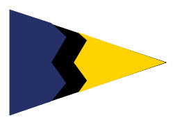
 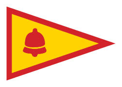
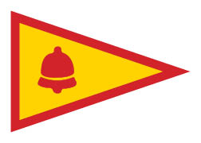
 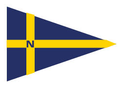
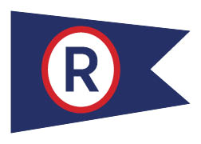
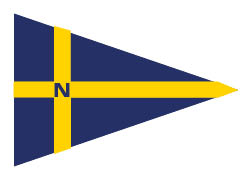
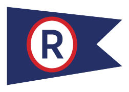


 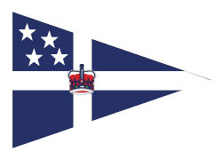
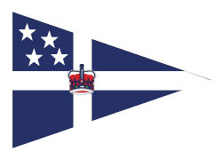


 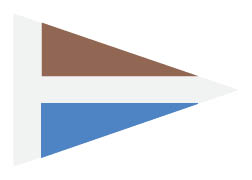
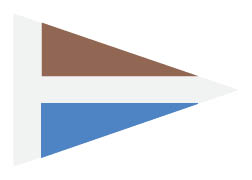


Much has changed in the 120 years since "robber baron", Jay Gould and a group of his friends founded the American Yacht Club in New York City. By 1887, clearly in need of a shore station, the club purchased "12 acres and some rocks known as Scotch Caps" from the Wainwright family at the tip of Milton Point in Rye, NY. The price was $6000 for what has become one of the outstanding locations on Long Island Sound.
In the beginning, all the boats enrolled in the club were steam yachts. However in 1889, the first American Yacht Club sailing race was held. In a "blow", 6 yachts completed a 20 mile course and established a tradition for what was to become one of the preeminent sailing clubs in the world. In the club's fleet have been America's Cup Defenders, Trans-Atlantic and Bermuda Race winners. Its sailors have been Long Island Sound, North American and World Champions in a number of classes. They have captured Olympic medals - most recently in 1996 when Courtenay Becker Dey took a bronze in the Europe class. Four AYC skippers have won the US Women's Sailing Championship.
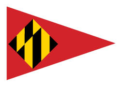
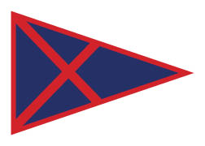
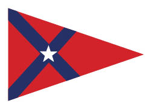
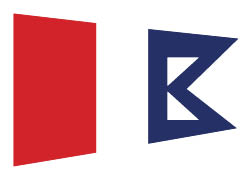
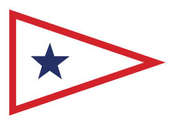
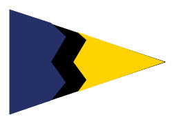
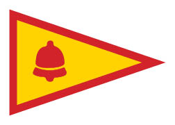
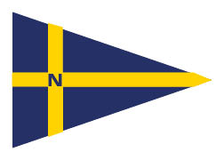
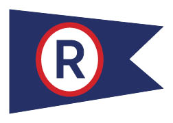
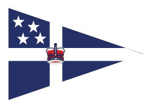
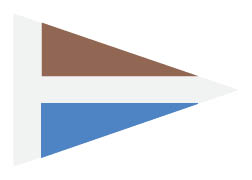